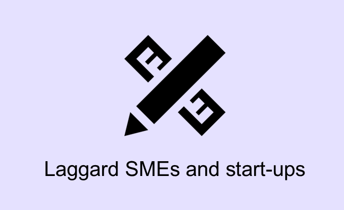

Industrial Inclusiveness
Innovation policies for industrial inclusiveness aim to support innovation activities in less innovative firms (including micro-entrepreneurs, small and medium-sized enterprises and start-ups) and traditional sectors. The focus is on strengthening their innovation capacities, as well as on building the adequate business environment for innovation.
Click below to find examples of innovation policies aimed at addressing industrial inclusiveness challenges faced by:
|  [1] | [2] |
Read on below to find detailed information and country-specific statistics related to industrial inclusiveness challenges.
While some start-ups and SMEs are an important source of new ideas, technologies and business models, the bulk of SMEs in most countries are active in mature, traditional or low-technology sectors, characterised by low knowledge intensity and weak innovation capacities. Those firms may be a drag on productivity, and frequently experience problems surviving in a globalised worldwhere technological changes (namely, changes brought about by digitalisation) are constant and rapid.
SMEs’ poor innovation performance often stems from the barriers that particularly SMEs and start-ups led by individuals from disadvantaged groups and/or located in lagging areas face. These include:
- Barriers to mobilising financial resources – Due to the high uncertainty linked to innovation projects, early stages of innovation are often costly and generate no immediate profits. SMEs and start-ups may not dispose of sufficient internal resources to finance such projects. High amounts of required collateral or little proof of previous performance may prove to be barriers for SMEs to access credit. When investments required are substantial, access to external investment can be critical. Investors, however, may not have confidence in the project’s potential, may not be able to assess the entrepreneurs’ ability to manage the project and its risks, or simply may not be aware of the existence of the project.
- Difficulties in attracting skilled human capital – Access to skilled labour is key for innovation in firms. Skilled individuals can help generate new knowledge and innovations; are more able to recognise the value of knowledge created elsewhere, absorb it and apply it to new commercial ends (Cohen and Levinthal, 1990); and can support firms in identifying business opportunities and help them adapt to changing environments. SMEs sometimes have difficulties attracting and retaining highly skilled individuals, as larger firms can prove more attractive if they offer better salary and career prospects, including opportunities for job progression and advanced training. Reputation factors might also play a role.
- Little access to new technologies and technological as well as managerial expertise – In general, SMEs are slower to adopt new technologies and new organisational methods. Managers may not be aware of new technologies or organisational innovations that could be useful to them; may not recognise the potential benefits of adopting them; or may lack the managerial or technological capabilities to implement them.
- Barriers to access domestic and foreign markets – There are a range of factors that may hinder the opportunities SMEs have to enter domestic markets, such as burdensome entry requirements (“red tape”), bankrupcy regulations that are excessively punitive for failed companies, and high costs of hiring and firing, among others. Additional barriers arise for accessing international markets, this includes difficulties in contacting foreign costumers and the high costs of establishing and maintaining foreign distribution channels and marketing networks, among others.
In addition to these barriers, the current context in which digital innovation prevails might prove challenging for these small firms. Digitalisation is a source of scale economies and winner-take-all market structures which may challenge small companies’ market participation (Paunov and Guellec, 2017; OECD, 2016).
Tackling the problem of dual economies
Inclusive innovation policies can tackle the problem of so-called “dual economies” –contexts where innovative, technologically advanced and highly productive sectors or firms coexist with the traditional, low productive sectors or firms that benefit little from new technology and lag behind in their productivity (OECD, 2015a; OECD, 2016). These economic structures reinforce social inequalities and may even threat social stability, because those in the less productive sectors of the economy do not benefit from the advanced sectors. Inclusive innovation policies address this problem by enhancing the competitiveness of less innovative firms to help them avoid lagging further behind, in particular by:
- Facilitating their access to technologies or organisational innovations created elsewhere that could be useful in increasing their productivity. This involves increasing awareness of the existence of such technologies, as well as providing the necessary capacity building or financial support to help firms benefit from them. An example is the Envoy System and Spark Programme in China.
- Promoting small-scale innovations in less innovative sectors. For example, the Encouraging R&D in Traditional Industries programme in Israel provides support to traditional industries undertaking R&D projects, to help bridge the gap between less and more innovative industry sectors.
- Supporting SMEs and start-ups from more disadvantaged groups overcomes barriers. For instance, the European Progress Microfinance Facility Programme implemented in Lithuania addresses the barriers women micro-entrepreneurs face in accessing financial services.
It is important to note that these policies support firms and sectors that have the potential to be economically profitable and innovative, and not those performing non-sustainable, declining or obsolete activities.
Fostering new economic activities
Some inclusive innovation policies support the emergence of new economic activities, leading to higher economic diversification. This is particularly the case of inclusive innovation policies that foster entrepreneurship among disadvantaged or underrepresented groups, such as Competitive Start Fund for Female Entrepreneurs in Ireland, as well as those that promote the development of innovative solutions for regional challenges, such as the Prototypes of Social Innovation programme in Chile. Some of these new activities may serve the needs of more disadvantaged or excluded groups, or geographical areas that were previously underserved, thus improving the well-being of these populations (OECD, 2015b).
Having several economic activities can raise economies’ resilience to negative shocks in demand that may affect specific sectors. The more diversified the economy, the higher are the opportunities for risk diversification. In this view, higher diversification leads to more sectors open to investment, because of which a larger number of investors will invest in risky projects ensuring better perspectives for long-run growth. In spite of this, the debate on whether economic specialisation or diversification is more desirable to spur economic growth has still not concluded.
The uneven distribution of innovation capacities across firms has contributed to widening the gap in productivity performance between the most productive and less productive firms. The capacity of less productive firms to learn from leading firms might also have diminished, as the cumulative and frequently tacit and localised nature of knowledge makes it progressively more difficult for laggards to catch up with innovation leaders (OECD, 2015a; OECD, 2016). This is frequently referred to as the “dual economy” problem, i.e. where the innovative, technologically advanced and highly productive sectors coexist with the traditional, low productive sectors that benefit little from new technology. Israel constitutes a case in point: the so-called “start-up nation” has a relatively small yet highly dynamic high-tech sector, which is the major driver of growth in the country, while the rest of the economy consists of traditional industries and service sectors characterised by low productivity and low wages. This dual economic structure has increased the levels of inequality and social unrest in the country (Lemarchand, Leck and Tash, 2016).
Low industrial inclusiveness thus hinders social inclusiveness. High-skilled workers in more productive firms progressively gain higher wages and benefit from regular on-the-job training and from constant interaction with other highly skilled individuals, ultimately increasing their innovation capacities. In turn, those working in less productive firms, even with similar capacities, see their wages stagnate or decline over time, have fewer training opportunities, and progressively have more difficulties move to highly productive jobs. These changesare even harder in contexts characterised by low geographical mobility of workers, rigid labour market regulations, or high levels of skills mismatch. As a result, workers with the potential to be highly productive might be trapped in low-productivity and low-innovative activities, or suffer from long periods of unemployment in case of mass layoffs (OECD, 2016).
The following indicators may help you identify whether a given country is suffering from barriers for industrial inclusiveness in a given country.
Cohen, W.M. and D.A. Levinthal (1990). “Absorptive capacity: A new perspective on learning and innovation, Administrative Science Quarterly, Vol. 35, No. 1, Special Issue: “Technology, Organizations, and Innovation”, March, pp. 128-52.
Lemarchand, G.A., E. Leck and A. Tash (2016), “Mapping research and innovation in the State of Israel”, GO-SPIN Country Profiles in Science, Technology and Innovation Policy, Vol. 5, UNESCO Publishing.
OECD (2016), The Productivity-Inclusiveness Nexus, OECD Publishing, Paris, http://dx.doi.org/10.1787/9789264258303-en.
OECD (2015a), The future of productivity, OECD Publishing, Paris,http://dx.doi.org/10.1787/9789264248533-en [3].
OECD (2015b), Innovation Policies for Inclusive Growth, OECD Publishing, Paris, http://dx.doi.org/10.1787/9789264229488-en [4].
Paunov, C. and D. Guellec (2017), Digital innovation and the distribution of income, unpublished mimeo.